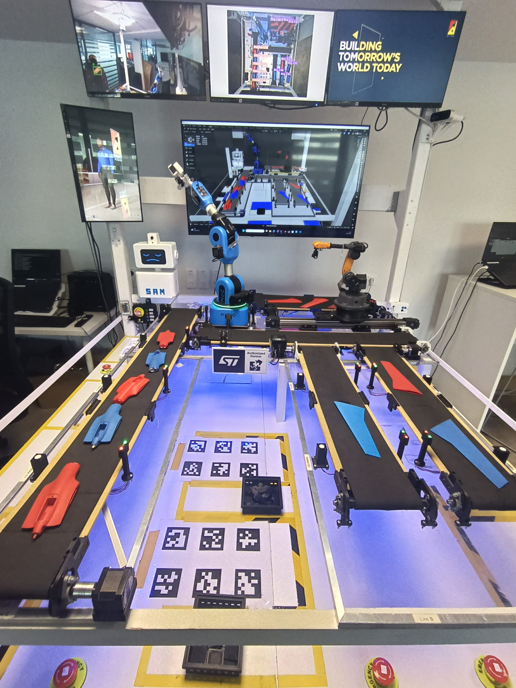
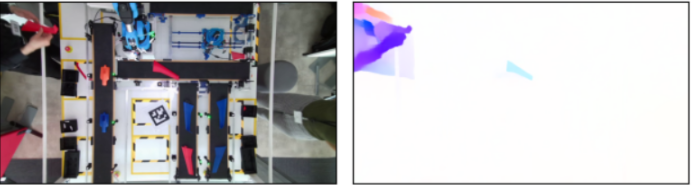

R&D project at ALTEN Labs focused on automating a manufacturing factory: teaching robot arms to detect, segment, and grab specific parts off a production line, and enabling robots to navigate autonomously through the factory floor.
Two main challenges: generating labeled training data for a YOLO segmentation model without manual annotation, and giving robots a map and self-localization capability via SLAM on ROS 2.

1) The Problem: Labeling Takes Too Long
To train a YOLO segmentation model, you need images with pixel-accurate masks drawn around each object. For factory parts, that means going through hundreds of photos and manually outlining each part, one by one.
That process is slow, tedious, and scales badly. We needed a way to generate labeled training data automatically, without anyone picking up a labeling tool.
2) The Insight: Optical Flow Segments Moving Objects for Free
From my previous internship at INERIS, I had worked extensively with optical flow to measure smoke speed in fire footage. One observation stuck with me: optical flow naturally highlights moving objects by computing pixel-level motion vectors across frames.
If an object moves and the background stays still, the flow vectors cluster on the object and are near-zero everywhere else. That is a free segmentation mask, with no annotation required.
The question became: could this work for factory parts?
3) The Solution: Auto-Labeling with RAFT + Kalman Filter
Instead of photographing parts in a cluttered factory scene, we placed each part on a plain background and moved it slowly in front of a fixed camera to record short video clips.
I applied RAFT optical flow to each clip. The flow vectors activate strongly on the moving part and stay near zero on the static background, giving a rough motion mask per frame.
I added a Kalman filter on top to smooth the mask over time, correcting jitter and filling in frames where the optical flow was noisy. The result was stable, clean segmentation masks across the whole clip.
Output: a dataset of images with pixel-accurate segmentation masks, generated automatically with zero manual labeling. I used this to train a YOLO segmentation model.
It worked. The trained model correctly detected and segmented the factory parts, enabling the robot arm to locate and grip them reliably.

4) SLAM on ROS 2: Autonomous Navigation
The second challenge was giving factory robots the ability to navigate on their own, without pre-programmed paths or fixed infrastructure.
I worked on SLAM (Simultaneous Localization and Mapping) using ROS 2: the robot builds a map of its environment in real time while tracking its own position within that map.
I ran simulations with several mobile robots operating in a shared environment, tested multiple SLAM algorithms, and tuned parameters to get better localization accuracy and map quality.